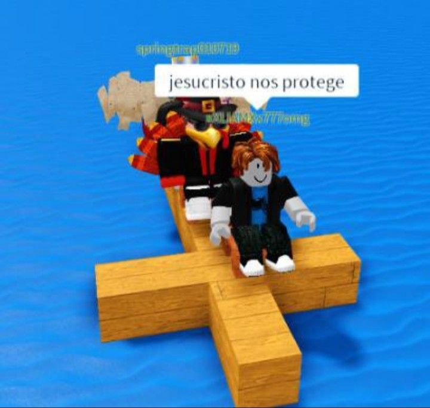

Bem-vindo(a) ao meu site!
Página 2
Página Especial
Meu nome é Thomas!
Estudo na escola Joaquim Izidoro Marins.
Estou fazendo meu site usando HTML agora... ('ڡ' )

olha só, um meme!
clique aqui para ver um vídeo!
Esse é o meu site ( ﾉ 'ｰ')ﾉ
musiquinha!
Lista de tarefas
- Comer - Passo a Passo
- Pegar a colher na mão
- Pegar a comida com a colher
- Colocar a colher com comida na boca
- Assistir alguma coisa
- Comprar pão
- Pegar o dinheiro
- Ir na padaria
- Pedir o pão
- Comprar pão
Top 10 dos meus albuns favoritos
- Chromatica - Lady Gaga
- Homogenic - Björk
- KiCk i - Arca
- EUSEXUA - FKA twigs
- 21 - Adele
- Inbred - Ethel Cain
- racine carrée - Stromae
- What Happened To The Heart? - Aurora